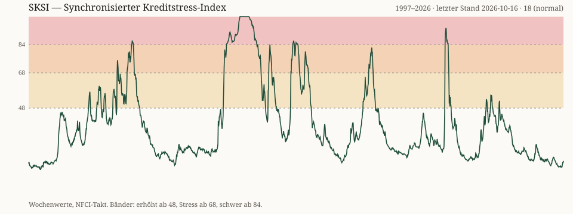

Aktueller Wochenwert
—
/ 100
Daten werden geladen
0 · ruhig48 · erhöht68 · Stress84 · schwer100
Der aktuelle Stand wird geladen.
Synchronisierter Kreditstress-Index · USA
Lade aktuelle Daten …
Der aktuelle Stand wird geladen.
Marktwerte und Abstand zum Normalniveau
Wöchentlicher SKSI-Wert

Die Historie wird aus den veröffentlichten Wochenwerten erstellt. Die Darstellung ist ein rückblickender Indikator und keine sichere Vorhersage.